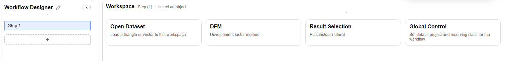

Workflow
Organize a repeatable review
Keep dataset views and DFM steps in one named workflow, with a shared project and segment.
Create a Workflow
- On Home, choose New Workflow.
- Click Workflow Designer or its rename control and name the workflow Jordan Lee — Paid Review.
- Click the + tile in the left panel to add a step, then choose Global Control.
- Set the default project to Monthly_Insurance_Dataset and the default path to Commercial Auto → All States → CH02 → Comprehensive.

Add a Dataset and DFM Step
- Add another step and choose Open Dataset. Select Gross Paid Loss and use the workflow defaults for the project and segment.
- Check the dataset's 12-month origin and development lengths and its cumulative view.
- Add a DFM step. Configure its details using the DFM walkthrough.
- Right-click a step to Rename it, or Duplicate a step when you need a similar review view.
Use New Folder from the step menu to group related work, then drag steps into the desired order. Select each step to inspect its own settings and output.
Save and Reopen the Workflow
- Choose File → Save or press Ctrl + S to save the workflow.
- Use File → Save As when you need a separate workflow file, and give it a recognizable name.
- To reopen a saved workflow, use Import from Path... on an empty workflow, or File → Import Workflow from....
- After loading, inspect Global Control and each step before continuing the review.
Saving is explicit. Before closing, save the workflow and check any dataset or method save messages, including errors from work embedded in the steps.